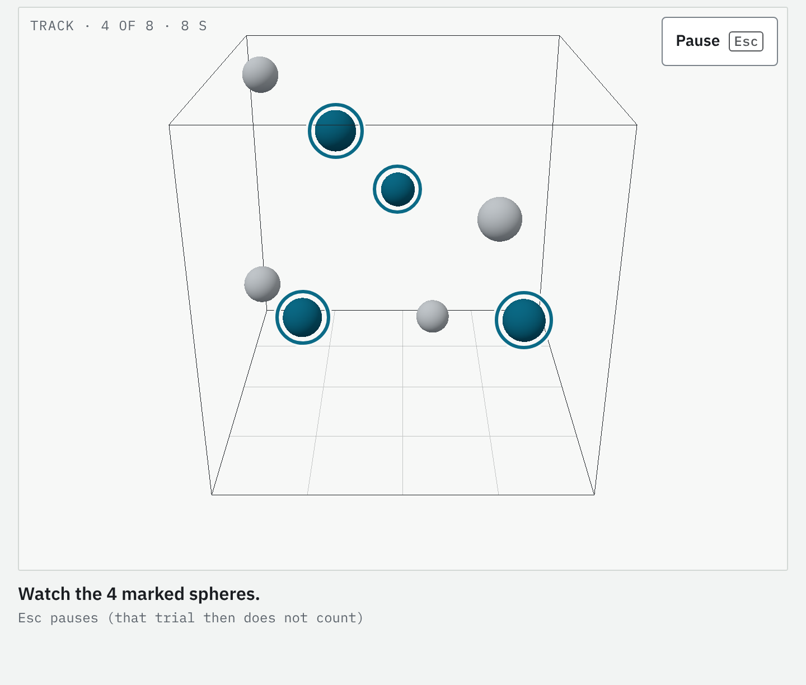
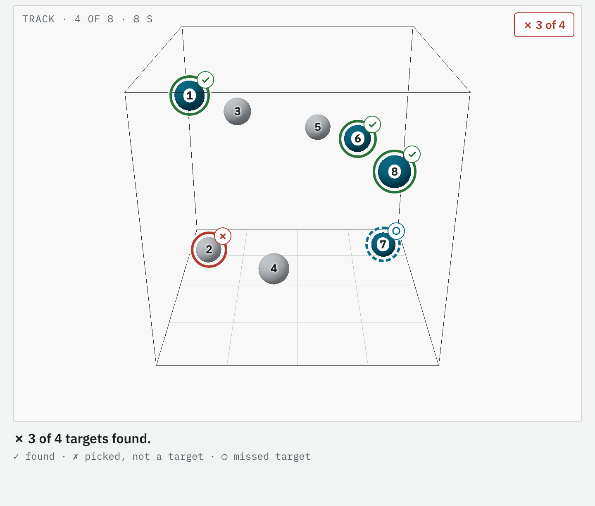

Track
3D multiple-object trackingattention practice

TrainsFollowing several moving objects at once (AT). Labelled attention practice, not visuospatial training: tracking relates to attention and working memory. Ratings are kept apart for small and large screens, because viewing distance changes the difficulty. Betattention control.
How to playSpheres sit in a cube. Some are coloured and ringed for 2 seconds: the targets. Then the marks go and every sphere moves at the same speed, bouncing off the walls and each other. When they stop, each sphere gets a number: pick exactly the targets (tap them or press their numbers), then confirm. A trial is right only when every target is found.
Difficulty grows with- Speed0.15 to 2.0 cube widths a second, in 46 steps, each about 6 % faster
- Targets2, 3, 4 or 5
- Spheres6, 8 or 10
- Tracking5, 8 or 12 seconds; the view still, or orbiting slowly
StrategiesOne shape: see the targets as the corners of one shape and watch it stretch, turn and slide, eyes resting near its middle; good for 2 to 4 spread-out targets. Watch the close passes: when a sphere comes near a target, watch both until they part; good for fast or crowded displays. Switchwhen the shape falls apart, or when close passes come so often that you lose the picture. When most spheres are targets, follow the others instead.
EvidenceGains on the trained task are large (d = 1.6–2.0), with no transfer to a different tracking task beyond retest (Harris et al., 2020). Studies of a commercial 3D tracking trainer gave very weak evidence for gains in attention or working memory; two of three tests of transfer to sport or driving found nothing, and none were preregistered (Vater et al., 2021). A 2025 soccer study found no transfer to game performance (Romeas et al., 2025).